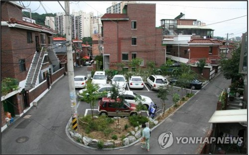

문단 태그
태그 입력 시 단락과 단락을 구분지어줌.
a bb

top
middle
bottom
| 1*1 | 1*2 |
| 2*1 | 2*2 |
| 1*1 | 1*2 | |
| 2*1 | 2*2 | |
| 1*1 | 1*2 |
| 2*1 | 2*2 |
| 1*1 | 1*2 | 1*3 | |
| 2*1 | 2*2 | 2*3 | 2*4 |
| 3*2 | 3*3 | 3*4 | |
파이썬 database
서울에 빈집이 3천호 가까이 있는 것으로 나타났다. 서울시는 빈집을 활용한 도시재생 사업을 본격화한다. 서울시는 지난해 11월부터 서울 전역의 단전·단수된 곳 등을 대상으로 실태조사를 벌인 결과 1년 이상 방치된 빈집이 2천940호 있는 것으로 파악했다고 17일 밝혔다. 이는 서울 총 주택의 0.1% 수준이다. 빈집 가운데 78%는 단독주택이었다. 철거 등이 필요한 노후 불량 주택은 54%에 해당하는 1천577호였다. 용산구에 348호로 가장 많았고 종로구 318호, 노원구 253호, 성북구 184호, 강북구 180호 등이 뒤를 이었다. 금천구가 10호로 가장 적었다. 시는 2022년까지 빈집 1천호를 매입해 청년·신혼부부 임대주택 4천호를 공급하기로 했다. 아울러 자치구가 빈집 정비계획을 수립할 수 있도록 예산을 지원할 방침이다. 강맹훈 서울시 도시재생실장은 "주거 취약계층 주거난 해소, 주민참여공간 확보, 공유경제 실현에 따른 일자리 창출 등에 빈집을 활용할 것"이라며 "저층 주거지에 새로운 변화와 활력을 불러일으키겠다"고 말했다.